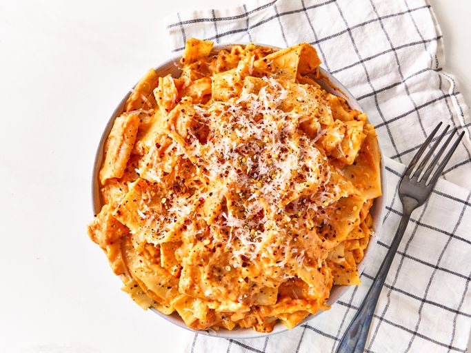

Home
Cheesy Lasagna Sheet Pasta

Description
This 3 ingredient cheesy lasagna sheet pasta could not be easier. Great for families and singles alike, anyone can accomplish this dish! Consisting of only the essentials, this lasagna shows exactly why it's about the love you put in the cooking, not the expertise required.
Remember before starting, wash your hands! Cleanliness is the start of every kitchen journey.
Ingredients
- 8 ounces lasagna noodles, broken in half
- 1 (24-ounce) jar tomato sauce
- 8 ounces shredded whole milk mozzarella cheese
Steps
- Bring a large pot of lightly salted water to a boil. Cook lasagna noodles in the boiling water, stirring occasionally, until tender yet firm to the bite, 10 to 12 minutes.
- Strain noodles and return to the pot. Add tomato sauce and cook on medium heat until sauce is heated through, about 5 minutes.
- Add cheese and stir until cheese is melted. Serve immediately.